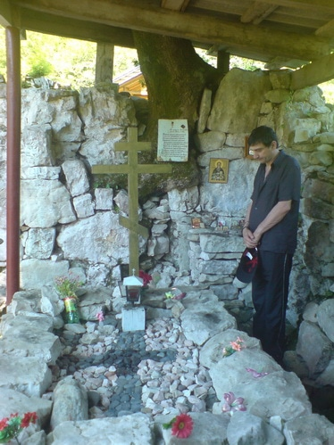
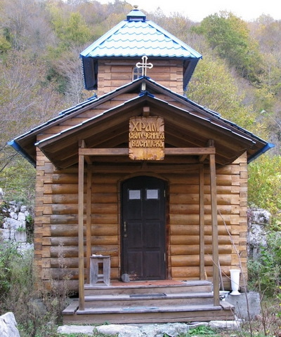

4 06 2011 (2169 дней 23 часа назад)
Мученик Василиск Команский
Пострадал за Христа во время гонений на христиан при императоре Максимиане Галерии (305-311 гг.) Мученик Василиск был отправлен в Команы, где содержался в темнице. Когда его повели к мучителям, то одели ему на шею железную цепь и обули в сапоги с гвоздями внутри. В знойный полдень воины встали на отдых, а святого привязали к сухому дубу. Стоя под раскаленным солнцем, мученик молился Богу. И совершилось чудо: земля заколебалась, цепь и сапоги спали, дуб зазеленел, покрылся широкими ветвями, доставляя прохладу, под ногами открылся источник воды, а проходившее мимо стадо волов, прославляя великие дела Божий, пало перед святым на колени. Многие, пораженные эти чудом, уверовали во Христа, воины освободили св. Василиска от оков, правитель же в злобе приказал ему принести жертву языческим богам. Но, по молитве святого, с неба сошел огонь, который сжег капище и идолов сокрушил. В бессильной ярости мучитель приказал отсечь св. Василиску голову (+ 308 г.).
На месте погребения святого мученика была построена церковь во имя его, в которую перенесли и его мощи, подававшие исцеления. Святителю Иоанну Златоусту (память 13/26 ноября) перед его кончиной, происшедшей в Команах, явился во сне святой мученик Василиск и произнес: «Завтра будем вместе».
Пострадал за Христа во время гонений на христиан при императоре Максимиане Галерии (305-311 гг.) Мученик Василиск был отправлен в Команы, где содержался в темнице. Когда его повели к мучителям, то одели ему на шею железную цепь и обули в сапоги с гвоздями внутри. В знойный полдень воины встали на отдых, а святого привязали к сухому дубу. Стоя под раскаленным солнцем, мученик молился Богу. И совершилось чудо: земля заколебалась, цепь и сапоги спали, дуб зазеленел, покрылся широкими ветвями, доставляя прохладу, под ногами открылся источник воды, а проходившее мимо стадо волов, прославляя великие дела Божий, пало перед святым на колени. Многие, пораженные эти чудом, уверовали во Христа, воины освободили св. Василиска от оков, правитель же в злобе приказал ему принести жертву языческим богам. Но, по молитве святого, с неба сошел огонь, который сжег капище и идолов сокрушил. В бессильной ярости мучитель приказал отсечь св. Василиску голову (+ 308 г.).

На месте погребения святого мученика была построена церковь во имя его, в которую перенесли и его мощи, подававшие исцеления. Святителю Иоанну Златоусту (память 13/26 ноября) перед его кончиной, происшедшей в Команах, явился во сне святой мученик Василиск и произнес: «Завтра будем вместе».
